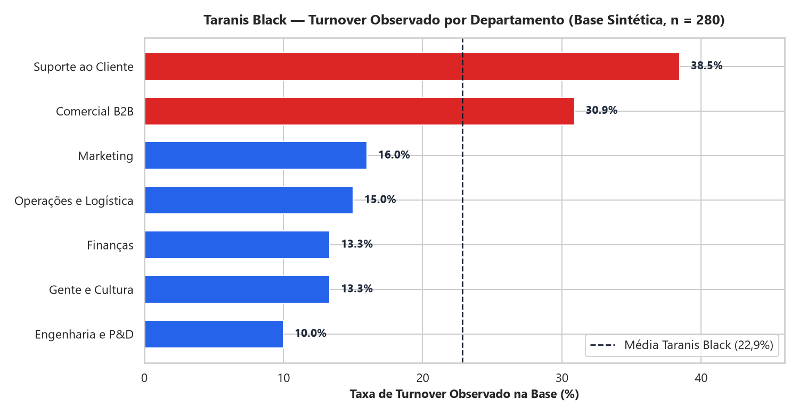
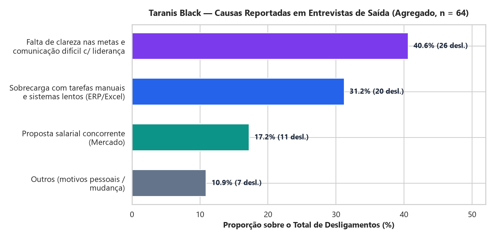
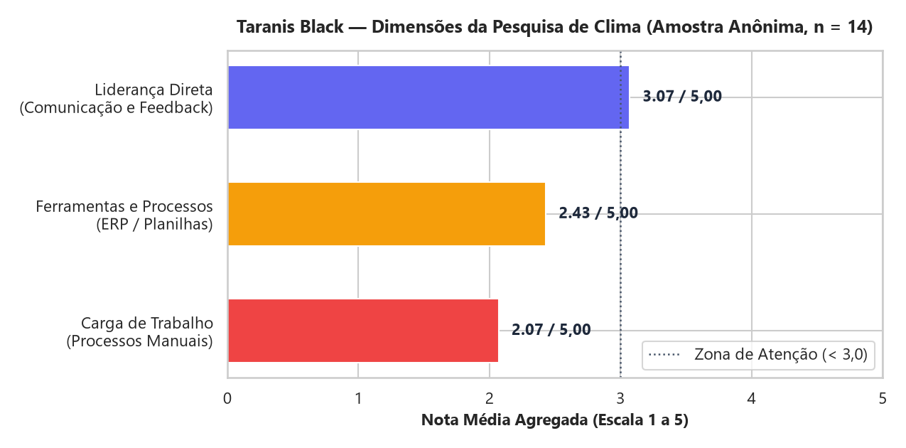
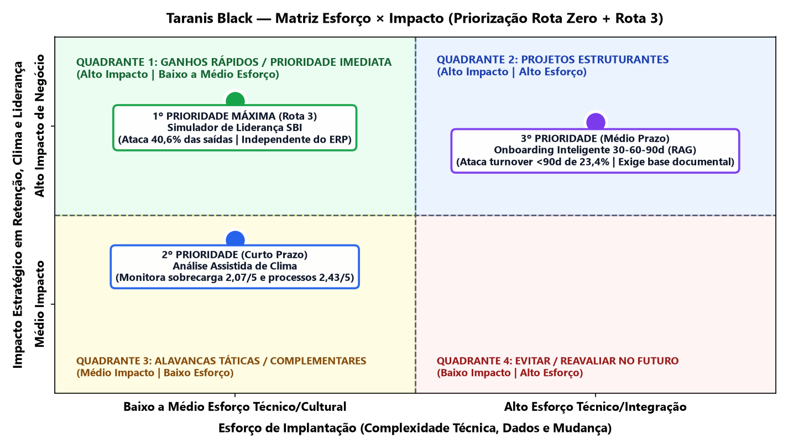

1. Resumo Executivo & Visão Sistêmica para a CEO
O crescimento de 35% ao ano da Taranis Black gerou forte pressão sobre processos manuais legados (demora de 48h em cotações no ERP, 40% do tempo comercial em planilhas, 5 dias de atraso financeiro e falta de rastreio de fretes). Nossa análise comprova que as próprias lideranças intermediárias estão sobrecarregadas por esses sistemas legados e acabam transferindo tensão para quem lida diretamente com os clientes na ponta: Suporte ao Cliente (38,5% de turnover) e Comercial B2B (30,9% de turnover).
Proposta Integrada: Priorizar imediatamente o Simulador de Liderança SBI (atacando os 40,6% de desligamentos por falha de comunicação/metas com líderes recém-promovidos), apoiado por Análise Assistida de Clima (monitorando sobrecarga operacional de 2,07/5) e Onboarding Inteligente 30-60-90 dias, sob estrita Política de IA Responsável e supervisão humana obrigatória.
2. Evidências Analíticas — People Analytics (Camada Ouro)




3. Rota Zero — AI Canvas, Tipos de IA e Governança LGPD
1º Simulador de Liderança SBI (Prioridade Máxima)
Tipo de IA: IA Generativa (LLM Conversacional) + Rubrica Determinística.
Valor: Academia segura para líderes recém-promovidos praticarem conversas difíceis com personas sintéticas antes da conversa real.
HITL & LGPD: Zero PII; vedado para avaliação formal ou demissão; escalonamento humano ao BP de RH em casos sensíveis.
2º Análise Assistida de Clima (Curto Prazo)
Tipo de IA: Híbrida — IA Tradicional/Estatística (Colab) + IA Generativa (NLP/Sentimento).
Valor: Reduz em ~70% o tempo de consolidação qualitativa e evidencia gargalos de ERP/processos para a diretoria.
HITL & LGPD: Regra k-anonymity (mín. 5 pessoas), remoção de Nome/Salário na Camada Prata e validação pelo analista de RH.
3º Onboarding Inteligente 90d (Médio Prazo)
Tipo de IA: IA Generativa com RAG + Automação Tradicional por Regras.
Valor: Guia novos colaboradores nos marcos de 30-60-90 dias sobre produtos NR-17 e playbooks, reduzindo turnover precoce.
HITL & LGPD: Base documental curada pelo RH e rituais humanos insubstituíveis de 1:1 com o gestor.
4. Rota 3 — Simulador de Feedbacks Difíceis (Modelo SBI)
3 Personas Sintéticas Configuradas: (1) Lucas Andrade (Executivo Comercial B2B Sênior — bate metas mas não atualiza CRM e foi ríspido com colega culpando o ERP lento); (2) Marina Costa (Analista de Suporte Pleno <90 dias — sobrecarregada por atrasos de frete sem rastreio, fechou tickets sem escalonar); (3) Rafael Mendes (Especialista de Expedição veterano — pulou checklist de mesas SmartDesk e ironizou líder novo).
"Lucas, sua postura está insustentável. Você nunca preenche o CRM, acha que está acima das regras porque bate meta e foi arrogante com a Camila..."
"Arrogante? Trouxe R$ 420 mil no mês passado enquanto o ERP demora 48h para liberar orçamento! Quando digo que perco 4h copiando planilha, é a realidade..."
Reconhece a entrega comercial e a dor real do ERP legado, delimita a Situação (reunião de segunda às 09h), descreve o Comportamento observável (6 propostas sem atualização e a fala literal diante do time), explica o Impacto (atraso na previsão financeira/comissões e constrangimento na equipe) e abre Escuta Ativa + Acordo Prático (atualização macro até quinta às 17h30 e pedido de desculpas à colega).
5. Ecossistema de Ferramentas & Governança
| Ferramenta / Camada | Papel Executado com Transparência no Projeto |
|---|---|
| Google Docs & Drive | Repositório oficial do template da Rota 3, kit de dados sintéticos, textos exportados das aulas e entrega final. |
| Google Colab / Python | Pipeline auditável Bronze → Prata → Ouro (anonimização, KPIs e geração dos 4 gráficos executivos). |
| Antigravity IDE | Execução técnica, documental e QA dos entregáveis, testes do Simulador SBI e validação de conformidade. |
| Manus AI | Ambiente inicial de mentoria, organização de contexto e estruturação do protocolo por fases. |
| Hub OS NEXUS & hub-os-guIA | Camadas de governança arquitetural (LGPD, Tolerância Zero a segredos, HITL) e mentoria técnica/STAR desenvolvidas por Lídi Moura. |